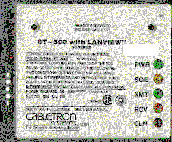
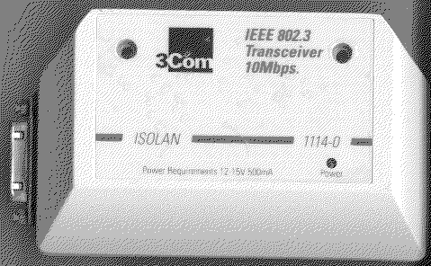

Previous
Next
TOC
IEEE 802.3 (10Base5)
In der Ursprungsversion wurde Ethernet für das ,,Yellow Cable'', das
heißt 10Base5 entwickelt.
Yellow Cable:
Die Busstruktur wird durch Einsetzen des ,,Yellow Cable'' realisiert.
Der Bus muß an beiden Enden mit 50 Ohm abgeschlossen sein und kann
eine Länge von maximal 500 Metern haben.
Transceiver:
Der Anschluß der Teilnehmer an den Bus erfolgt mittels Transceiver-
und Dropkabel (Transceiverkabel). Die wichtigsten Funktionen im
CSMA/CD Zugriffsverfahren werden vom Transceiver realisiert.
Zwei Transceiver von unterschiedlichen Herstellern und in unter-
schiedlicher Ausführung (wobei es auch Transceiver für RG58 Verkabe-
lung gibt und diese dann auf der einen Seite eine BNC-Buchse
besitzen:


weiterblättern
Kapitel IEEE 802.3 (10Base5), Seite 1